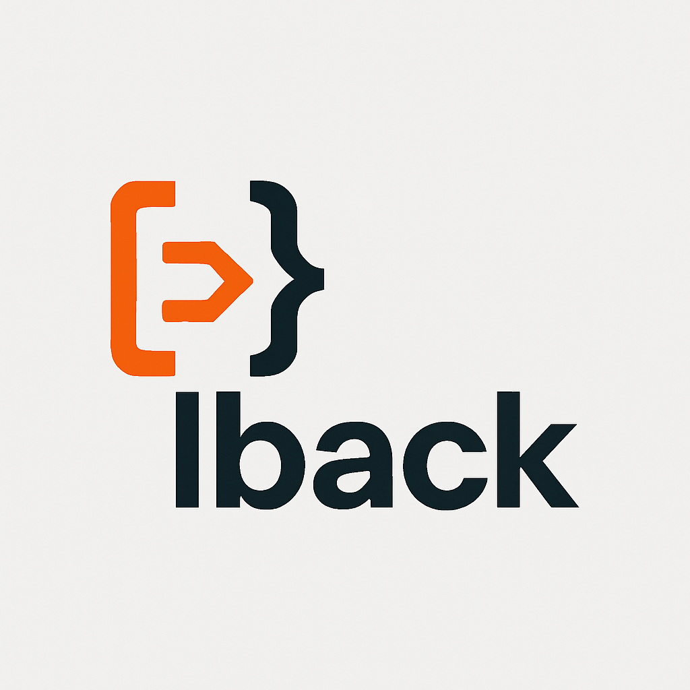

Welcome to lback documentation!
{kind=link}
lback is a modern and performant Python web framework designed with a focus on modularity, control, and developer experience. It offers a solid foundation for building a wide range of web applications, from simple APIs to complex, data-driven systems.
Key Features & Highlights:
Modular & Organized Architecture: Enjoy a clean project structure inspired by popular frameworks like Django, making it easy to learn and scale with pluggable modules.
Powerful CLI (`manage.py`): A comprehensive command-line interface to streamline project, app, database, and user management tasks.
Flexible Configuration: Load settings effortlessly from
settings.py,config.json, and environment variables (.env).Advanced Routing System: Define clean, dynamic URL patterns with support for path variables and modular URL inclusion.
Robust Middleware Management: Process requests and responses seamlessly before and after they reach your views, with built-in Dependency Injection support.
Strong ORM & Database Integration: Full ``SQLAlchemy``_ support for efficient data modeling and interaction with various databases.
Automated Database Migrations: Manage database schema changes in an organized and automated way using ``Alembic``_.
Comprehensive Authentication & Authorization: Built-in support for Session-based and ``JWT``_ authentication, complemented by a flexible permissions system.
Efficient Templating: Leverage the powerful ``Jinja2``_ templating engine for dynamic and reusable HTML interface rendering.
Smart Error Handling: Catch errors gracefully and generate appropriate responses, with a built-in detailed error reporting system for development.
Essential Security Features: Tools to safeguard your application against common vulnerabilities such as CSRF, CORS, SQL Injection, and XSS. Includes Rate Limiting and Security Headers.
Integrated Admin Panel: A ready-to-use administrative interface featuring a Dashboard and comprehensive user management.
API Development Tools: Helper utilities for building robust APIs, including data serialization capabilities.
Form Handling: Streamline the creation and validation of HTML forms.
File Management: Efficiently serve and manage both Static Files (CSS, JavaScript, images) and user-uploaded Media Files.
Signals System: Enable decoupled components to communicate by allowing them to get notified when specific actions occur elsewhere in the framework.
Core Utilities: Handy helper functions for common tasks related to sessions, users, emails, and more.
WSGI Support: Optimized and ready for seamless deployment on production WSGI servers.
Integrated Testing: First-class support for ``Pytest``_ to facilitate writing and running robust application tests.
Developer-Friendly Tools: Includes built-in Logging and Debugging tools for a smoother development workflow.
Frontend Integration: Optional styling capabilities with ``Tailwind CSS``_ integration.
Comprehensive Documentation: Detailed API reference and developer guides to help you get started and build effectively.
—
Getting Started
To get started with Lback, explore the following sections in order:
Contents:
—
Core Features
These sections cover the fundamental building blocks of an Lback application:
—
Data & Security
Learn how to manage your data and secure your application:
- Models & Database
- Database Migrations System
- Authentication
- Authorization
- 1. Permissions System: Role-Based Access Control (RBAC) for Standard Users
- 2. Managing Permissions, Groups, and Users for Standard Users
- 3. Admin User Permissions and Hierarchy
- 4. Enforcing Authorization with
PermissionRequiredDecorator (General Usage) - How to Use:
- 5. Permission Check Flow & Denied Access Handling
- 6. Signals for Authorization Flow
- Sessions in Lback Framework
- Security Features
—
Advanced & Integration Features
Explore specialized functionalities and integration points:
—
Deployment
Instructions on how to deploy your Lback application to production:
—
Signals Reference
Detailed documentation for all signals emitted throughout the framework, categorized by component:
- Signals from BaseView
- Signals from APIDocs
- Signals from BaseModelSerializer
- Signals from AdminRegistry
- Signals from AdminUser and Role Models
- Signals from AdminUserManager
- Signals from AdminUserRepository
- Signals from AdminAuth
- Signals from JWTAuth
- Signals from OAuth2Auth
- Signals from PermissionRequired
- Signals from SessionAuth
- Signals from ErrorHandler
- Signals from MiddlewareManager
- Signals from MigrationCommands
- Signals from PermissionRepository
- Signals from RoleRepository
- Signals from SessionManager
- Signals from TemplateRenderer
- Signals from UserManager
- Signals from User Model
- Signals from UserRepository
- Signals from WSGI Application and Server
—
API Reference & Project Structure
Dive into the code and architecture of Lback:
—
About
The lback documentation is maintained and authored by Ibrahem Abo Kila, providing developers with detailed guidance and references for building with the framework.
Author: Ibrahem Abo Kila Email: ibrahemabokila@gmail.com GitHub: https://github.com/hemaabokila/lback_framework LinkedIn: https://www.linkedin.com/in/ibrahem-abo-kila/ YouTube: https://www.youtube.com/channel/UC…